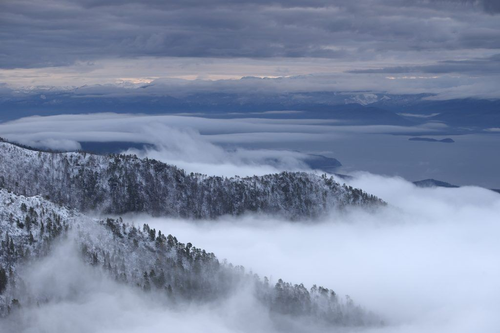
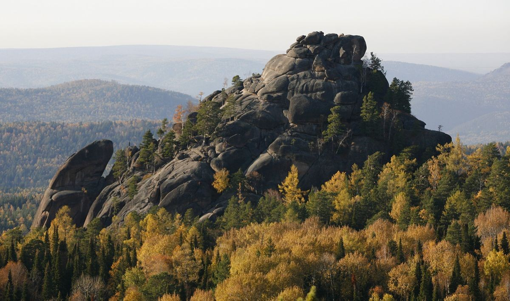
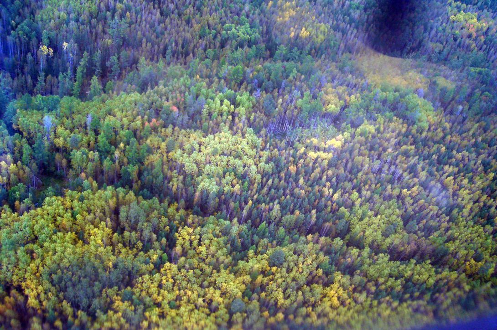
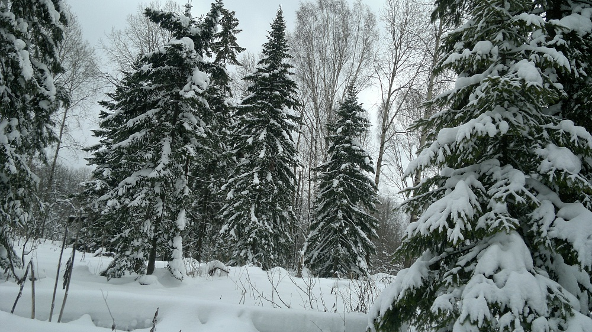
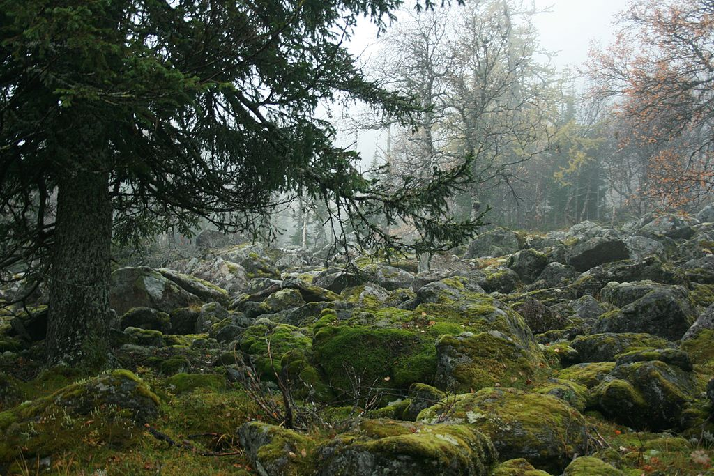
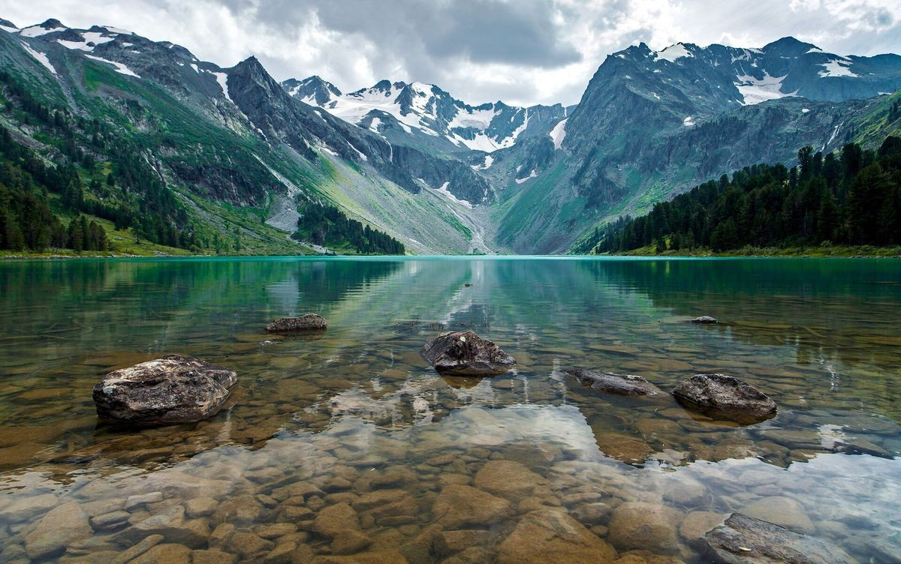

На самом деле человек несведущий при слове тайга обычно теряется и ему едва ли не воочию представляются всевозможные ужасы, которые с ним якобы могут произойти вдали от благ цивилизации. В действительности все обстоит иначе - человек подвергается намного большей опасности когда, например: идет с работы домой, переходит проезжую часть или пользуется дома газовой плитой….
О самом необходимым в тайге. На самом деле человек несведущий при слове тайга обычно теряется и ему едва ли не воочию представляются всевозможные ужасы, которые с ним якобы могут произойти вдали от благ цивилизации. В действительности все обстоит иначе - человек подвергается намного большей опасности когда, например: идет с работы домой, переходит проезжую часть или пользуется дома газовой плитой…. Собственно, так же, как и в этих случаях, соблюдение элементарных правил способно гарантированно уберечь от неприятностей и сделать жизнь в тайге в достаточной степени комфортной и безопасной.
Надеяться лучше только на себя, а потому остановимся на том, что передвигаться по тайге надо с максимальной осторожностью и не в одиночку.Для начала стоит заметить, что в одиночку ходить в тайгу относительно рискованное предприятие не в виду каких то опасностей, которые подстерегают за каждым кустом, а по прозаической причине: тайга травмоопасна и человек находящийся в удалении от ближайшего жилья, повредив ногу, окажется в весьма затруднительной ситуации. Поиск в тайге необычайно сложен, тайга впрочем, как и любая «зеленка» представляет проблему для поиска с вертолета (которым часто пользуются спасатели) – такой способ по эффективности напоминает разглядывание микробов при помощи бытовой лупы. Для поиска с вертолета необходимо разведение сигнального костра, соответственно в ночное время костер разводится на открытом и по возможности возвышенном месте и должен быть максимально ярким, днем же подойдет дымный сигнальный костер с большим количеством травы, хвои… Но в целом надеяться лучше только на себя, а потому остановимся на том, что передвигаться по тайге надо с максимальной осторожностью и не в одиночку. В тайге можно заблудиться в виду огромного количества похожих мест (недостатка надежных ориентиров), довольно таки большого количества брошенных грунтовых дорог (магистральные лесозаготовительные волока, лесовозные дороги, всевозможные пути переходов вахтовых участков, геолого-сейсмические профили и так далее), ну и еще по ряду причин. И перед тем, как рассмотреть способы ориентирования на местности – хотелось бы остановиться на том, что обязательно следует иметь при себе, отправляясь в тайгу. Я подчеркиваю при себе, а не в сумке, рюкзаке и так далее!
- Нож. Не кухонный, а настоящий нож типа охотничьего, острый и не требующий частого затачивания. Достаточно прочный, тяжелый, с надежной ручкой – такой нож можно при необходимости использовать в качестве туристского топорика, мачете и собственно в его основном качестве.
- Спички. Сколько угодно зажигалок, охотничьих спичек и прочих удобных мелочей – но нужны обычные спички. Которые мы упаковываем следующим образом: заворачиваем в пакет (мягкий, шуршащий, полителеновый) и в завернутом виде помещаем в презерватив, презерватив завязываем. Таким образом, упаковываем каждый коробок, в количестве 10 штук и рассовываем их по карманам (на которых не сидим, и которые плотно застегиваются).
- Соль. Обычная поваренная соль. Помимо той, что берется с собой для приготовления пищи и заготовки рыбы. Упаковывается в солонку с крышкой и помещается в презерватив (универсальная таежная упаковочная тара – поэтому просьба не иронизировать).
- Сахар. Кусочки медленно или быстро растворимые, кому как нравится. Не менее полукилограмма. Заворачиваем в пакет (в один ряд для удобства размещения в карманах) и в презерватив.
- Аптечка. Это необязательно должна быть целая аптечка, достаточно следующего: пузырек марганцовки, пузырек на выбор: йод, зеленка, перекись водорода и так далее, сильное обезболивающее, пара одноразовых шприцов, противозмеиная сыворотка (это в условиях Полярного Урала можно исключить в виду полного отсутствия змей), стрептоцид, цитрамон, поливитамины и перевязочный материал. Для людей которым могут понадобиться специальные препараты – взять необходимое количество с двукратным запасом. Достаточно удобно поместив все кроме пузырьков в презервативы или наоборот таблетки пересыпать в пустые пузырьки и плотно закрутить и разместить в поясной сумке или в подсумок на брючный ремень.
- Железная кружка.
- Железная ложка.
- Фляжка с водой.
- Компас, блокнот, карандаш.

Одежда, экипировка.
Теперь о одежде – одежда должна быть максимально удобной, не сковывать движений, не натирать, прочной и иметь максимальное количество застегивающихся карманов, которые будучи чем то наполненными не будут опять таки натирать и сковывать движений. Хорошо если верхняя одежда будет относительно влагозащищенной, но необходимо помнить, что она должна быть дышащей. Очень хороша для тайги одежда из не толстого брезента, хотя прекрасно подойдет и рип-стоповский камуфляж военного образца, подходит, но менее надежен обычный военный камуфляж из саржи, очень здорово иметь термобелье и термоноски. В теплое или жаркое время года очень полезна «разгрузка» армейского типа. Обязателен надежный дождевик, накомарник, обычная кепка, бейсболка или кепи военного образца, шерстяная шапочка, длинный (для возможности заправлять в штаны и таким образом надежно защищать поясницу) теплый, шерстяной свитер. Две пары обуви одна из которых надежные кроссовки, берцы, трекинговые ботинки и так далее, другая резиновые, ПВХ или ЭВА- сапоги. С собой необходимо иметь достаточное количество смен нижнего белья (или это термобелье или обычное хлопчатобумажное белье).
В тайге нет прямых маршрутов и идти приходится с поправкой на местность: буреломы, ветровалы.И так мы постепенно переходим к комплектованию рюкзака. К довершению темы одежды и обуви хочу добавить, что верхнюю одежду необходимо обработать надежным антимоскитным реактивом. Отправляясь в места потенциально опасные на предмет клещевого энцефалита необходимо заранее сделать прививку. Внимание надо уделить и рюкзаку - он должен быть вместительным, прочным, иметь широкие помочи, которые желательно застегивались бы перемычкой. С моей точкой зрения гораздо удобнее в эксплуатации станочные туристические рюкзаки, с хорошей подкладкой под спину. Вместительность рюкзака должна позволить уложить в него всю поклажу, которую берем с собой - потому, что кроме рюкзака на себя вешаем только чехол со снастями или охотничье оружие и патронташ. Я расскажу о том, что в обязательном порядке должно находится в рюкзаке, остальное собственно по вкусу и желанию.
- Рыльно-мыльные, туалетно-гигиенические принадлежности и полотенце.
- Смены белья, носков.
- Запасная пара обуви.
- Железная миска, столовый нож, кружка (вторая), ложка (вторая), котелок (лучше компактный набор котелков).
- Фляжка (вторая).
- Туристический коврик.
- Кусок (10-20 метров) надежной, достаточно прочной и толстой веревки.
- Кусок 4-6 метров полиэтеленовой пленки.
- Сухой паек. (Минимальный продуктовый набор для непридвиденных случаев из расчета на каждый день экспедиции - подробнее об этом в "питании")
- Монтажный нож с комлектом запасных лезвий.
- спирт 200 грамм.
- Надежный и компактный фонарик с запасными источниками питания.
- Резервный комплект: соль, сахар, спички, аптечка - специально упакованный.
- Серьезное, проверенное антимоскитное средство.

В тайге все весьма приблизительно. Направления лучше не запоминать, а записывать.Особенности экстремального ориентирования, таежные объекты. В тайге все весьма приблизительно, приблизительно установлены квартальные столбы, приблизительно размечались в свое время лесозаготовительные делянки, очень приблизительна картография тех мест (даже на леспромхозовских картах) - поэтому для ориентирования на местности нет ничего лучше качественного компаса и при пользовании необходимо не в целом прикидывать направление, как делают многие, а помнить, что погрешность на пару-тройку делений способна удлиннить маршрут в 2-3 раза. Направления лучше не запоминать, а записывать. В тайге нет прямых маршрутов и идти приходится с поправкой на местность: буреломы, ветровалы (часто встречается на уклонных ландшафтах), болота... Вообще если в целом при подсчете расстояния по карте, лучше сразу умножить полученный результат на два. Несмотря на то, что надежных ориентиров в тайге почти нет и доверять в основном можно только собственным засечкам, которые делаются ножом или топориком на крепко стоящих, обязательно живых деревьях, относительно одиноко стоящих (не в окружении кустов), на расстоянии визуальной видимости от одного к следующему. Заплутавшему в тайге все таки можно рассчитывать на некоторые таежные ориентиры, а потому рассмотрим некоторые из них:
- Река, ручей - потерявшись окончательно можно воспользоваться таким способом, любая водная артерия должна куда то стекать и хотя говоря о тайге вообще ручей может уходить в землю, в близости от Уральских гор - я такого не встречал. Вообще алгоритм действий прост - в теплое время года человеку нашедшему в тайге ручей, речушку или реку по сути уже ничего не угрожает. Просто идем вниз по течению водоема, достигнув устья водоема идем вниз по течению реки в которую впадает предыдущий и рано или поздно выходим к людям. Ну и тот факт, что река обеспечит вас водой, при необходимости пищей – ягоды, грибы, рыба (все в изобилие встречается вдоль берегов рек). Реки часто пересекаются дорогами (брод, возможно мост и т.д.) – этим тоже вполне можно воспользоваться, естественно проанализировав следы на дороге на предмет того, как часто она используется….
- Лесозаготовительный участок (делянка) - здесь необходимо дать несколько определений: "волок или трелевочный волок" - пропиленное в лесу направление по которому трелевочный трактор собирает и вытаскивает спиленные стволы деревьев с обрубленными сучьями в штабель. "Магистральный волок" основной или лесовозный волок от которого, как лапы у ели под углом примерно в 45 градусов отходят обычные волока (если взять вид сверху похоже на елку ). "Штабель" сложенные на высоту до 3-х метров стволы заготовленной древесины под вывозку, комель к комлю, вершина к вершине, место под штабель несложно определить по лежащим лагам которые подкладывааются под штабеля, впоследствии вминаются в землю, да и нижний слой бревен часто не берется в следствии того, что заготовка древесины производится летом, а вывозка зимой и все это вмерзает в землю и вывезено быть не может. Есть исключения, когда возят "из под пилы", но определить место штабеля все равно просто - это довольно таки ровная площадка с кучами щепы от подавленных челюстным погрузчиком деревьев... У читателя может возникнуть вопрос для чего я столь подробно описываю лесозаготовительную делянку когда речь идет о таежном ориентировании... Ответ следующий: во-первых делянки встречаются в Пермском крае уже наверное чаще чем нетронутая тайга, а во вторых делянка даже очень бывшая и старая способна дать таежнику исчерпывающую географическую информацию для ориентирования. Дело в том, что магистральный волок (от обычного трелевочного визуально отличается тем, что он шире более укатанный и менее развороченный, кроме того по технологии лесозаготовок порубочные остатки (сучья, ветки и т.д.) укладываются после работ на трелевочный волок, а на магистральном этого не делается) - по сути своей магистральный волок, начиная от штабеля является одновременно ЗСЛД (зимней сезонной лесовозной дорогой), которая ведет туда, куда заблудившемуся попасть собственно и хотелось бы То есть все просто: с одной стороны трелевочные волока (расходятся елочкой) с другой дорога в поселок... Дорога дальше может разветвляться и чтобы не запутаться надо внимательнейшим образом изучить следы (направление колеи) по замятостям колеи можно понять куда поворачивало большинство лесовозов - "КРАЗ" или "Урал" с 20-25 тоннами леса на лесораме не легковушка и следопытом быть совсем необязательно. Кроме того лес уложенный в штабель будет лежать комлем в сторону вывозки (особенности технологии погрузки - комель ствола кладется к кабине, а разворачивается под загрузку лесовоз порожним). Да что говорить любой пенек спиленного в делянке дерева является по сути дорожным указателем - только надо понимать, какая трелевка используется "комлевая" (чокер троса цепляется за комель) или "верхушечная" (чокер тросса трелевщика цепляется за верхушку дерева) в Пермском крае используется "верхушечная" трелевка и соотвественно дерево валится верхушкой (кроной) в сторону магистрального волока, короче в сторону дороги, для этого выпиливается козырек (этакая долька из ствола дерева - чтобы придать необходимое направление), а значит сторона где плоскость пенька спилена ниже указывает нам направление движения. И здесь внимательно! Ориетируемся по запилам на пнях, а не в коем случае не по оставленному в делянке дереву! (дело в том, что это скорее всего "обратка" то есть дерево, которое упало не так как хотелось бы, а наоборот в следствии ветра или ошибки рабочих и именно по этому его не смогли взять трактором). Теперь алгоритм движения вкратце: идем по лесу - видим пни от поваленных деревьев - следуем по направлению нижней плоскости пня - выходим на трелевочный волок - по нему глядя опять же на пеньки выходим на магистральный волок и доходим до штабеля или штабельного места смотрим по комлям (нет комлей, лага положенная под комли сильнее вдавлена в землю) и идем в данном направлении по магистральному волоку - собственно мы на дороге в поселок. Если разобраться с этим внимательно и понять, то проблем не будет, поскольку бродя по тайге набрести на делянку не сложно, сложно на нее не набрести. Редко встречаются делянки только на самом берегу рек в виду того, что в водоохранной зоне лесозаготовки запрещены.
- Квартальный столб или кварталка - ставится не везде, и весьма приблизительно, обычно присутствуют вблизи лесозаготовительных делянок. Выглядит в отличии от лесопарковых зон помосковья не как крашенный аккуратный столбик, а представляет из себя дерево диаметром 20-25 см, срубленное топором на высоте человеческого роста или груди, верх импровизированного столбика затесан для придания прямоугольного сечения. Указывает в большинстве случаев на близость делянки, поблизости можно найти засечки на деревьях идут они, как правило с севера на юг до следующего квартального столба, ну а север с югом несложно определить по мху на комлях деревьев который растет с северной, северовосточной стороны...
Хотелось бы заметить в тайге принято помогать друг другу при необходимости поэтому в случае экстремальной ситуации смело обращайтесь за помощью.Попав в брошенный поселок можно определить дорогу из него в сторону жилого (обитаемого) поселка, попав к староверам поинтересоваться дорогой (они вполне добродушные, мирные люди и обязательно помогут заплутавшему путнику), от зимовий часто ведут тропы к жилью отмеченные засечками на деревьях (кстати по их свежести и по состоянию зимовья можно приблизительно определить когда оно примерно последний раз кем то посещалось). На сесмологическом профиле можно найти следы трактора или вездехода и пойдя по ним сначала в одну потом в крайнем случае в другую (если следы оборвуться..) выйти к жилью, обитаемому поселку или месту дислокации вахтового участка сейсмологической партии, возможно к вахтовому участку колонии- поселения (учреждение УИН - управления исполнения наказаний - тоже вариант, на таких участках есть дежурные сотрудники и рация для связи), как впрочем и на метеостанции. Хотелось бы заметить в тайге принято помогать друг другу при необходимости поэтому в случае экстремальной ситуации смело обращайтесь за помощью к собирателям, старателям, грибникам, туристам, охотникам, рыболовам, рабочим которых вы можете случайно встретить. Говоря об ориетировании в тайге я искусственно разделил ситуации на выживание в экстремальной ситуации, которое в настоящий момент описываю и правильного ориентирования о котором можно сказать следующее в двух словах: всегда и во всех ситуациях при себе надо иметь компас и уметь уверенно им пользоваться! Всегда (даже отходя от палаточного лагеря в туалет) при себе необходимо иметь все то, что перечислено в начале статьи, а к компасу нужен блокнот и карандаш. Всегда при движении по тайге надо определять направления по компасу и записывать показания в блокнот не надеясь на память, какой бы феноменальной она у вас, по вашему мнению не была! Помимо компаса существует ориентирование по солнцу, которое как известно восходит на востоке, заходит на западе, днем, как бы на юге В случае проблем с компасом можно ориетироваться по солнцу когда оно есть, такое ориентирование весьма приблизительно (так же приблизительно при необходимости можно определить время). Но способ прежний определив стороны света, вы выбираете направление движения на глаз определив градусную меру направления и записываете в блокнот, например: "12 августа 2011 года, 11 часов 35 минут - юго-восток 135 градусов". Второй способ состоит в том, что для более точного определения градусной меры направления пользуемся циферблатом наручных часов. Определив одну из сторон света мы направляем цифру 12 часов на север, соответственно 6 часов - будет юг, 9 часов - запад, 3 часа - восток и выбрав направление делаем запись в блокноте - например: "12 августа 2011 года, 11 часов 35 минут - юго-восток и указываем "показания минутного деления", соответствующее выбранному направлению между 6 и 3 часами скажем 23 минуты....." Правильное ориентирование выглядит именно так. В случае если вы все таки заблудились - ваши действия следующие:
Всегда при движении по тайге надо определять направления по компасу и записывать показания в блокнот не надеясь на память, какой бы феноменальной она у вас, по вашему мнению не была!Я в отличии от других авторов по выживанию и ориентированию, уважая читателей воздержусь от идиотских рекомендаций типа - "не паниковать" Паникуйте на здоровье если есть время и желание, а когда закончите:
- Вам необходимо вернуться назад по своим следам! Помните самая распространенная ошибка попытаться срезать угол, пройти наискосок - если вы так сделаете, то ситуация гарантированно выйдет из под контроля и вы окончательно потеряетесь! По своим следам (самая близкая дорога это та по которой шел и которую знаешь ) до знакомого и понятного вам места... Обычно пишут до того места где начал плутать Вот кто бы его показал, это место - видимо это единственное место где никто никогда не был Итог операции: мы не заблудились, мы блин дурака валяем потому, что у нас времени валом
- Если вы куда то пошли и понимаете, что по времени уже давно должны были прийти, а сейчас по сути в незнакомом месте. То останавливаемся и проверяем время движения, прикидываем расстояние - если все верно, то достаем блокнот и начинаем идти четко назад (по обратному азимуту) и опять таки до знакомого места (не вызывающего никаких сомнений), с которого сделав поправку направления и естественно записав в блокнот, место, время, направление - начинаем движение.

Основы передвижения по тайге, таежная этика.
Вообще без нужды и каких либо крайних обстоятельств в тайге пересекаться не принято, люди бывают разные и поняв про ряду признаков, что поблизости находятся люди идти на контакт без крайней на то необходимости не стоит. В тайге полно зон различных режимов, колоний-поселений соответственно - оттуда нередко случаются побеги, их ловят специально организованные (в тех колониях откуда совершен побег или в управлении исполнения наказаний) - поисковые группы, встречаются и просто пьяные придурки-охотники, которые сдуру могут пальнуть на звук или движение или самострел поставить (придурки потому, что настоящий охотник никогда даже не поднимет ружья не убедившись куда стреляет, а самострелы запрещены законом), замаскировать капкан - в общем случайные встречи не всегда могут оказаться приятными и без необходимости их принято избегать.
Находясь в тайге надо соблюдать главный таежный принцип передвижения: я замечаю, вижу и слышу все - меня никто.А из этого следуют, что находясь в тайге надо соблюдать главный таежный принцип передвижения: я замечаю, вижу и слышу все - меня никто. Хотя и из этого принципа есть исключения при движении, особенно в весенний период надо дать возможность зверью почуять ваше приближение, чтобы вам заранее уступили дорогу и вы внезапно не столкнулись лицом к лицу например с медведицей и ее медвежатами. Ситуация может выйти из под контроля поскольку медвежата, как собственнои малые котята рыси, щенята волка довольно таки любопытны и не столь пугливы и осторожны - вполне могут приблизится к человеку и тем самым спровоцировать нападение взрослого животного, которое будет защищать потомство, а если животное ранее не имело встреч с охотниками, то нападать оно будет не ведая страха. Обойти такую ситуацию проще простого - к животному нельзя незаметно приблизится с наветренной стороны (то есть ветер с вас на него) потому, что оно вас почует задолго ло того, как вы к нему подойдете и уйдет с вашего пути - вы его не увидите и не услышите, кроме того звери очень чутко реагируют на волнение лесных птиц, имеют очень острый слух. В общем зверь заблаговременно вас почувствует и уйдет - уведя с вашего пути свое потомство. Кроме одного случая, который - если вы конечно не охотитесь по ходу движения - вам следует предусмотреть. Исключение составляет ситуация, когда довольно сильный ветер дует вам в лицо и к зверю вы подходите с подветренной стороны (то есть ветер дует со зверя находящегося на вашем пути - на вас) помимо того, что в такой ситуации зверь не состоянии почуять ваш запах, ветер создает еще и аккустическую завесу шевеля верхушки деревьев (шелест листье и веток), ломая сухие веточки и т.д. и зверю сложнее определить по звукам ваше приближение, кроме этого во время порывов ветра обычно замолкают птицы и "таежная сигнализация" может не сработать. Вообщем используем охотничьи методы "скрадывания" методом от противного! Или меняем угол движения по отношению к ветру (внося время от времени поправку в соответствии с показаниями компаса) или двигаемся создавая шумовое сопровождение: например напеваем песенку или взяв в руки палку сшибаем ей сухие ветки деревьев которые попадаются на пути нашего движения (такой звук способен разносится на расстояния до 6 км), специально наступаем на сухие сучки поппадающиеся под ногами по ходу движения - одним словом не теряя времени обеспечиваем себе звуковое сопровождение Чтобы избежать нежелательной встречи со зверем более чем достаточная мера...
Уметь слушать тайгу, то есть привыкнув к наиболее распространенным таежным звукам начать воспринимать их как фон, выделяя все не характерные, не типичные и чуждые звуки и пытаясь понять природу их появления.В то же время обнаружить присутствие других людей в тайге при необходимости не сложно - достаточно уметь слушать тайгу, то есть привыкнув к наиболее распространенным таежным звукам начать воспринимать их как фон, выделяя все не характерные, не типичные и чуждые звуки и пытаясь понять природу их появления. Такой анализ поначалу утомляет, но очень скоро входит в привычку и это происходит практически на подсознательном уровне. С высоты сопки или небольшой горы, так же если залезть на дерево можно увидеть передвижение зверя или человека (тем более группы людей) при прохождении подлеска (кустов или низко растущих деревьев) которые преобладают на холмистом ландшафте, дело в том, что двигаться в густом подлеске не задевая ветки невозможно, а у движения есть направление и наблюдая с высоты определить такое движение выделив не типичнные для ветерка колебания - их постоянный характер и направление, намного проще чем может показаться на первый взгляд.
Чтобы не оставлять длинных запаховых следов, необходимо обрабатывать обувь, каждый раз после перехода луга, поля, лесных лужаек.Определяют близкое расположение людей или крупного зверя по птицам: резко вздетевшие птицы, резко замолчавшие или наоборот отчаянно заголосившие указывает на то, что с той стороны где это произошло происходит движение человека или крупного зверя - в этом случае достаточно понять направление движения и переждать или изменить траекторию собственного движения. Переждать лучше в связи с тем, что спокойно сидящий к примеру человек на расстоянии 150-200 метров останется незамеченным собакой, а движущийся вполне может быть обнаружен и за 300-400 метров. Запах лежащего человека находящегося с наветренной стороны (ветер с вас на собаку) короче чем у человека стоящего, движущийся, тем более некоторое время активно движущийся человек имеет намного более сильный запах для собаки или другого животного, нежели спокойно сидящий или недавно начавший спокойное движение. При необходимости сбить собаку или любое другое животное со своего следа совсем несложно. Распостраненное мнение о способе с табаком или перцем (или смесью) не так эффективно, как принято считать. Поскольку животное понюхав обработанные следы, как бы теряет ваш запах, но он остается в его памяти и пробежав немного та же собака может вновь найти его... Универсальным средством для сбивания животных со следа, помимо аэрозольных спецпрепаратов такого назначения, является обыкновенный муравейник, обувь тщательно натирается мусором и муравьями из муравейника, особенное внимание при натирании необходимо уделить рантам и швам ботинок и подошве если она имеет протектор. В этом случае животное просто совсем теряет вас, поскольку не состоянии выделить ваш запах из общего фона. Чтобы не оставлять длинных запаховых следов, необходимо обрабатывать обувь, каждый раз после перехода луга, поля, лесных лужаек, а при возможности просто не выходить на них. Дело в том, что на лугах, полях, лужайках растет множество трав не характерных для лесистой местности и многие из них на момент перехода находятся в стадии цветения, так вот цветочная пыльца является прекрасным и очень устойчивым индификатором вашего следа впоследствии. Для собаки или охотящегося животного такой шлейф ароматов с к примеру лесной лужайки в лес это прямая дорога к вам, даже принюхиваться не придется. Временное перемещение по каменистому или песчанному руслу ручья (непосредственно по воде) если не остановит то, наверняка надолго задержит любое животное идущее по вашим следам. Сильный дождь крайне затрудняет, а через 20 минут делает невозможной запаховую индефикацию. Ну кроме этого движение группы след в след затрудняет не только визуальное чтение следов, но в том, числе и индефикацию по запаховому следу. Передвигаться по тайге рекомендуется, высоко поднимая ноги, мягко опуская ногу на всю площать стопы, стараясь не наступать на сухие сучки и палки, кроме случаев когда необходимо обратное...

Основы таежной жизни.
Теперь уже, надеюсь, читатель получил представление об ориетировании на местности, необходимой экипировке, взял на заметку ряд полезных советов - собственно следуя им, уже можно спокойно посещать таежные места на предмет охоты, рыбалки, туризма. Но статья бы была неполной если бы мы не коснулись других аспектов. Для начала стоит сказать, что жизнедеятельность человека в экстремальных условиях базируется на трех китах, а именно: на питании, гигиене и тепле, все прочее по сути вторично. Ибо если человек обеспечен питанием, здоров и имеет ночлег обеспечивающий организму полноценный отдых - условия перестают быть экстремальными. Поэтому я думаю начнем по очереди:
- Питание - таежное питание имеет ряд особенностей, оно должно быть максимально калорийным и питательным, при этом занимать, как можно меньше места и как можно меньше весить. Оно должно иметь большой срок хранения и надежную упаковку. В кратце - определим его так: нужны витамины и нужен животный белок. Ничего лучше качественной тушенки под наши задачи не придумано Во второй половине лета витаминов в тайге уж точно не меньше, чем на приусадебном участке у опытного садовода (кстати говоря в отличии от этого персонажа приведенного в качестве сравнения - в тайге реально разжится витаминами, в исчерпывающем количестве - практически в любое время года включая и зиму). Нам предстоят летние приключения, а потому перечислю дары природы, которые вас обеспечат уникальным витаминным комплексом: земляника, костяника, брустника, клюква (с момента, как сходит снег и до того, как он покроет землю), черника, голубика, красная смородина, морошка, малина, ежевика, дикий щавель, молочные кедровые шишки с уже вкусными орехами (они хуже хранятся и местные жители заготавливают на зиму их несколько позднее, но они уже вполне вкусны и съедобны). Собственно если к этому изобилию иметь сахар в достаточном количестве, поскольку большинство ягод все же кислые на вкус и чай (заварку) для тонуса - изысканными десертами на время таежной жизни обеспечить себя на месте не проблема. Кроме того сахар прекрасно восстанавливает силы при переходах и иных энергозатратах - так, что иметь его при себе в достаточном количестве обязательное условие. Тоже самое касается соли, ну во первых соль вымывается из организма через пот, а потеешь летом в тайге постоянно причем не только при больших физических нагрузках - так называемый эффект джунглей (как собственно любой густорастущей "зеленки"). Солнце шпарит по кронам (лето короткое, но жаркое и +35 С - не редкость), часть влаги (а тайга штука влажная) превращается в пар, но его задерживают густые кроны деревьев - короче внизу в жару вместо ожидаемой прохлады получается импровизированная "парная" А вы еще при этом отнюдь не в купальнике или плавках - поскольку насекомые тоже решают свой вопрос питания Ну и отсюда две возможные проблемы, которые с успехом решает соль: обезвоживание и солевой баланс в организме. Соль по сути восполняет солевой баланс, кроме того обладает способностью задерживать в организме воду - соответственно в рационе ее должно быть несколько повышенное по сравнению с обычной жизнью количество. По поводу белковой пищи если есть охотники, оружие или хотя бы качественная рогатка (которой местное население испокон века добывает рябчиков, считая несерьезным жечь патрон на такую смешную дичь). Имея ружье и патроны, могу заверить, что без мяса вы, скорее всего не останетесь, я например оказавшись в тех местах и не будучи ранее охотником, воспользовавшись советами бывалых, очень быстро им стал... Все дело в том, что особенного искусства не требуется, поскольку дичи такое количество, что обеспечить себя мясом не представляет особой проблемы Ну и конечно рыба, ловля которой является основной и главной целью предстоящей экспедиции, а ее там до сих пор более чем достаточно... Опять таки грибы - вполне благородные, экологически чистые и очень вкусные в огромном просто таки количестве: вдоль рек по кромке лужаек и лужков - рыжики (самые натуральные, которые можно в салат сырыми стругать ), по вырубам подосиновики и подберезовики в нереальных количествах для Московского глаза, практически под каждым кедром моховики (они там очень интересные и по форме очень напоминают молоденькие белые - этакие боровички ) и маслята иногда. Если кто то не грибник, то алгоритм действий прост, находим глазами ближайший кедр топаем к нему и набираем ну самое малое с полведра этих моховиков Именно в тех местах белых в больших количествах не встречал, они растут в Пермской области до Ныроба включительно, а дальше и ближе к Коми (а предпологаемое место будет недалеко от границы с Коми) встречаются изредка. Интересно собираются в тайгу некоторые местные, они кладут в рюкзак небольшие наборчики в отдельных пакетиках: 3 средних картошины, одну среднюю головку лука, несколько перчин горошком, штуки три лавровых листика, и одну среднюю морковку. Каждый пакетик способен обеспечить горячим и вкусным первым блюдом - это или уха, или уха из петуха (в смысле с рябчиком или парой-тройкой, что еще лучше), или грибной суп ( по ихнему "грибовница" - отличается тем, что грибов в нее кладется неимоверное количество, получаются этакие тушеные грибы кое с чем , но вкусно необыкновенно). Как я уже писал, солят пищу немного сильнее (в меру разумеется) чем в обычной кулинарии. Выходя на несколько дней берут хлеб из расчета на три-четыре дня и галеты, хлебцы или сухари по желанию на остальные дни пребывания в автономном выходе. Обязательно берут чай, он отлично тонизирует, будучи достаточно свежим и крепко заваренным способствует не только тонусу, но и пищеварению, кроме того всегда есть возможность разнообразить обычный черный чай травяными сборами (годятся все ягодные листья: малины, ежевики, брустники и т.д., листья и цвет зверобоя, ну и собственно много чего - для перечисления потребуется отдельная статья ) Находя и заваривая чагу (березовую), которая будучи крепко заваренной напоминает вкус дешевого кофе типа Пеле, необходимо помнить, что чага имеет ярко выраженный мочегонный эффект. В самом начале я упоминал про сухой паек необходимый на каждый день таежной жизни. Варианты могут быть различными - ведь вкус дело тонкое и индивидуальное, поэтому могу сказать, что если у самого неопытного и неприспособленного к таежной жизни человека на каждый день будет банка качественной тушенки, пачка галет или хлебцев и помимо этого он будет пить свежезаваренный сладкий (или с сахаром в прикуску) чай, с которым пару раз в день он будет съедать не менее 1 кружки собранных ягод помятых с сахаром - то он не только выживет, но даже не особенно похудеет Ну и к слову - обычно таежники "гарниры", на себе родимом - в тайгу не таскают - оставляя их для домашнего обихода, но это думаю понятно, что толку то от них? Для пищеварения хлеба или галет - достаточно, а плотно поев становится тяжело передвигаться ну, а в тайгу "харю плющить" мало кто ходит все таки по большей части там двигательная активность требуется /далее специально для Катюши: если еще не выпил то от медведя убежать, а если уже приложился то догнать его же , хотя справедливости ради "самые опытные таежники" начиная с совершеннолетия трезвыми обычно не бывают / Ну, а если серьезно, то тайга пьяных не любит - это неписанный закон. Паек и прочие продукты необходимо тщательно (а не "на скоряк") упаковать и действовать по системе, чтобы максимально удобно и надежно было там... Я умышленно не описываю в статье добывания огня при помощи карабина, презерватива (реально ), бытовых химических реакций, бытовых приборов, двух палочек, веревочки и куска сухого мха или лучины и т.д. и т.п. - поскольку такие способы многим известны, а самое главное отсутствие раздолбайства и наличие серьезного и уважительного отношения к тайге гарантирует отсутствие необходимости применения таких техник Собственно зная о методах выживания довольно таки много, я мог бы перечислить массу всевозможной "пищи" при помощи, которой можно восстановить силы и которую можно найти практически в любых условиях, рассказать, как выспаться в тепле в зимнем лесу и еще массу всяческой информации подобного рода... Но мы собираемся на рыбалку, а не в разведвыход в тыл противника поэтому такие познания, с моей точки зрения, учитывая наши задачи - не уместны за отсутствием необходимости. Для тех кто интересуется подобными вещами - существует огромное количество специальной литературы и треннинги. Я же готов настаивать на том, что посещение тайги это безопасное, интересное и полезное мероприятие - которое при серьезном и грамотном подходе в части организации - по сути не является экстремальным....
- Гигиена - говорить о гигиене осбенно не буду в виду того, что все люди взрослые. Скажу только, что гигиенические процедуры никто не отменял и в тайге. Дело в том, что всевозможные кожные инфекции, раздражения и воспаления единолично держат пальму первенства, потеснив даже, в таежных делах - простудные заболевания.... Вывод очевиден, а потому пользоваться аптечкой даже в случае царапины, менять белье. Особенное внимание уделять местам одежды которые труться о кожу (манжеты, воротники, голенища сапог, берцев) - соответственно кожу мыть и защищать от потертостей например лейкопластырем, бинтом, места на одежде при невозможности переодеть или постирать - протирать спиртом. При невозможности вымыться тело можно протереть спиртом или водкой. Места покусанные насекомыми, которые зудят необходимо обрабатывать, потому, что расчесы на местах покусов могут воспалиться или загноиться. Для снятия раздражений великолепно подходит пихтовое масло (на моей памяти знакомый избавился от многолетней экземы), которое можно при желании без проблем купить в поселке (там есть своя пихтоварка). Ну и требования к мытью или при невозможности протираниям обусловлены еще тем, что помимо всего прочего находясь в тайге человек испытывает довольно серьезный пресс со стороны кровососущих насекомых и ихний яд накапливаясь в организме может вызвать нешуточную аллергическую реакцию. Лучше всего поможет баня, но за неимением - просто чаще мыться....
- Тепло - вообще то необходимо привыкнуть к тому, что ночлег в тайге, да и собственно любой привал подразумевает костер. На костре готовят пищу, кипетят воду, у костра согреваются, просушивают одежду, обувь и снаряжение. Ночью костер не подпустит близко дикого зверя и тот не испугает вас. А потому организация места привала или стоянки начинается с заготовки дров и определяется иногда их количеством в непосредсвенной близости. Ну собственно говоря разводить бездымник - надобности нет, на всякий случай скажу, что уровень дыма регулируется присутствием в огне бересты, хвои, смолистого дерева, травы - соотвественно в бездымнике этого нет, а в дымном сигнальнике есть и много... Ночной костер отличается от дневного временем сгорания и собственно длинной дров. Если днем делай, что хочешь, то ночью на место стоянки приносятся несколько сухих деревьев (местные называют "сушина"), которые укладываются наподобие карточного веера, то есть верхушки раскиданы в стороны, а комли (в точке кострища) укладываются один на другой. Необходимо, чтобы макушки были несколько расставлены в стороны и находились в плоскости ниже горящего комля (тогда огонь ни при каком раскладе не пойдет по стволу сушины) само место кострища по кругу огребается палкой или ножом по кругу вырезается и удаляется дерн - для того, чтобы огонь не пошел по земле. Дрова подкладываются пр необходимости в течении всего темного времени суток методом простого пододвигания сушин в точку горения. Кстати говоря одежда таежника не должна состоять из тканей боящихся огня - типа болоньи, шелка и им подобных - поскольку после первой ночи у костра такая одежда будет представлять из себя решето или соответственно после сушки около костра... А потому ну ничего лучше тонкого брезента в качестве таежной одежды с моей точки зрения не существует. Очень не советую и обычные ватные телогрейки, одеяла - попадет искра или горящая щепочка при треске костра, - на такую вешь и она начинает тлеть внутри. Куда удобнее для тепла настоящий шерстяной, теплый, толстый свитер грубой (домашней) вязки и лучше не один, а два про запас. В одном вы могли вспотеть по дороге и соответственно прибыв к месту стоянки он будет влажным и ваш организм начнет стремительно терять тепло, а при наличии ветра можно нешуточно простудиться - поэтому два, пришли переоделись, влажный просушили. Помимо основного головного убора и накомарника о котором я уже писал в подразделе экипировка, для ночлега в тайге необходимо иметь вязанную шерстяную шапочку помимо тепла она еще защитит ваши уши от насекомых во время сна. Неоходимо иметь теплые шерстяные носи для ночлега - помимо тех в которых вы ходите и если для передвижения термоноски имеют преимущество, то для ночлега намного лучше иметь шерстяные. Остальная одежда для ночлега каких то особенных требований не имеет, кроме того, что должна быть гарантировано сухой и не прокусываться насекомыми...

Выбор места стоянки, ночлега в тайге.
Ну и конечно место для лагеря или ночлега предполагает определенные требования к месту, а именно:
- Влагозащищенность. Причина думаю понятно все вокруг затентировать невозможно и понятно, что какие то действия и передвижения по лагерю придется делать и в дождь. Идеальное место при таком раскладе разбить лагерь под раскидистой кедровой сосной - там и в ливень то особенно не льет...
- Ветрозащищенность. Довольно таки удобно если поблизости лес густой, а еще лучше вокруг подлесок, густые кусты - таких мест в тайге много. Во первых не мешает ветер, во вторых уютнее в том, смысле, что к лагерю невозможно приблизится незамеченным ни зверю, ни человеку и даже прошедший поблизости наверняка будет замечен, в тоже время лагерь будет в принципе не виден пока буквально не уткнешься в него носом...
- Отсутствие поблизости зарослей высокой травы. Причина прозаическая в высокой траве - мошка, а потому, дабы не быть покусанными в принципе в прибрежные заросли высокой травы , без крайней на то надобности лучше не соваться.
- Место не должно быть низким учитывая окружающий ландшафт. В логе, низине или распадке обычно к вечеру и по утрам собирается туман и рассасывается ближе к обеду - вообще то сложно найти любителя отдыхать во влажной, холодной сырости. Туман бывает достаточно плотный и даже костер, как правило тлеет, а не горит. Дрова в непосредственной близости гнилые и влажные и дорогих сердцу друзей человека из числа насекомых намного больше.
- Иметь источник воды (река, ручей, родник). Тут нечего объяснять - вода нужна постоянно и каждый раз топать куда то за ней или копать ямки и собирать специальными методами попросту бессмысленно... Ну и кроме питья надобностей выше крыши - еще и не наносишься.
- Если лагерь устанавливается с целью рыбалки на реке - то он должен быть выше русла на 30, а лучше на 50 метров. Собственно причины те же самые, что и в пункте №4. И еще одно: в лагере часовых мы не оставляем, поэтому он не должен быть виден с воды. Места исключительно дикие, но как говорится - подальше положишь поближе возьмешь

Таежные истории (куда же без них…).
Теперь несколько таежных историй имеющих на первый взгляд мистическую подоплеку, но в реальности имеющих самое прозаическое объяснение:
- Ну только представьте - ночь, полная темнота, вы сидите у костра - в общем светлое пятно в абсолютно темной тайге и за его пределами - ну хоть глаз выколи. Как говорится - свои все дома - романтика.... И тут вы понимаете, что в непосредственной близости кто то есть. Его не видно, но отчетливо слышно, ломаются сучки и ветки под ногами, что то невдалеке падает в воду - у всех одновременно слуховые галлюцинации понятно не случаются... Становится несколько менее уютно, разговор утихает - все начинают прислушиваться, а звуки продолжают подтверждать первоначальные наблюдения. Потом кто то рыкнул и на душе становится, как то тоскливо, тем более, что ПНВ (прибор ночного видения вы забыли..... в армии) карабин или ружье (если и есть) при непонимании в какую сторону стрелять особых надежд не вселяет, а выстрелить вверх тоже не совсем логично, а если вы этим нападение зверя спровоцируете? А когда он в лагерь выскочит стрелять вполне возможно будет поздно и даже если вы стрелок экстра-класса (на звук, на движение, с колена после кувырка и т.д.) то на линии огня может кто то оказаться.... Короче тоскливо, а звуки всю ночь почти до рассвета продолжаются. История не только веселая, но с виду где то загадочная, а между тем мистики в ней никакой - дело было весной, ну медведь нашел себе себе участок леса, чтоб понимаешь даму пригласить - "то" да "се", а тут мы со своей рыбалкой. Одним словом заняли мы мишкину территорию, и как говорится чуть секса зверюгу не лишили. Вот и начал он нас оттуда выживать, причем выживать в общем то по доброму... Решение оказалось простым мы поднялись на несколько сотен метров выше по реке и встали там. Больше нас никто не беспокоил в лагере. Но по реке конечно ходили, как говорится гулянки (медвежьи) -гулянками, а рыбалка то по любому важнее, так приятеля (тезку своего) мишка прогнал более грубо. Выперся из кустов и рычит, как овчарка и потихоньку на на приятеля идет. Тот заметил, что зверь не в настроении (может проблемы у него ) и уступил медведю, аккуратно отступая и не провоцируя попятился и ушел. Потом летом я сам уже его видел, мы (так получилось смородину с ним с одного куста кушали, только с разных сторон ) - надо сказать встреча очень запомнилась, по крайней мере мне, мишку я спросить не успел (растерялся немного ). А дело так было, я спускался по реке облавливал себе перекатики, сначала рыбка не очень ловилась и я спустился по реке почти до нашей стоянки, но тут хариус ожил и дело пошло. Начинать круг заново было лень и я решил сходить пониже. А в том месте река раздваивается на два русла, вообщем иду потихоньку воды по колено примерно, ну а берег чуть ниже груди получается. Смотрю смородина прямо, как виноград к воде свешивается, спелая... Я удочку на кусты пристроил, чтобы не мешалась и решил покушать. Стою в воде и кушаю себе ягодки, в один прекрасный момент, тяну на себя ветку, отодвигаю и вижу буквально в паре метров .... Смотрели на друг друга мы не долго, по ходу ни он, ни я ягоды не доели! В общем мне запомнился треск кустов, что было, не скрою, намного приятнее чем например всплеск Слышал я тот треск конечно спиной, потому, что перемещался я по реке (по перекату), аки посуху со скоростью гоночного болида.... Вот такая вот встреча А вообще медведи любопытные и крайне интересные звери, они говорят за туристами костры тушат, лезут в воду и катаются по тлеющему кострищу... Ну, а помимо того, что весной можно по незнанию попасть на его территорию, можно приманить медведей со всей округи заурядной неаккуратностью! Ягоды и мед, как в сказках медведи тоже любят, но в большей степени они обожают всякого рода, совсем не романтичную тухлятину и падаль (на которую их подманивают охотники). Так что утилизация отходов, особенно мясных - имеет большое значение их надо срезая дерн - закапывать хотя бы на штык лопаты и укладывать дерн на место, неплохо кинуть на это сверху несколько пихтовых или еловых лап. А вот устроеную возле стоянки помойку мишки начнут посещать очень быстро и регулярно, впрочем как и лагерь если по нему будут разбросаны съестные припасы. А потому под корнями кедра (земля мягкая и легко роется и всегда прохладно) устраивается "лабаз" для продуктов питания и помимо дерна накрывается лапником - кстати говоря и продукты лучше хранятся... Между прочим медведи запросто рыбу ловят, прямо лапой, правда съедают, как правило только пузо с кишками, а остальное на берегу "про запас" закапывают и забывают. Закапывают, как правило неаккуратно: обычная картина, из песка на берегу торчит рыбий хвост и пахнет тухлятиной... Таких мест опасаться не стоит своих рыболовных угодий медведи не имеют и рыбалку совмещают, как правило с местами водопоя, которые у медведей тоже не являются постоянными в отличии парнокопытных, например от лосей, - те даже форсируют реку вброд в одних и тех же местах и к местам водопоя имеют свои тропы....
- Существуют однако в тайге и свистящие медведи... Происходит это потому, что медведи таким образом переговариваются иногда, хотя чаще это происходит весной во время ихних свадеб, самку зовет или самка самца. Удивительный это свист скажу я вам - самое главное он в такой тональности, что кажется, что зверь за ближайшим кустом от вас... На самом деле - обычное дело и ничего опасного нет, такой свист по тайге разносится на 9 км, ну а медведей в тайге хватает, одним словом посвистывает часто и это совсем не опасно... Собственно, как к волчьему вою (зимой) относиться к явлению следует философски: во первых охотящийся зверь никогда специально себя обнаруживать не будет, ну и я повторюсь, при соблюдении определенных правил звери не опасны. За все три года, которые я прожил в тех местах и раньше судя по рассказам старожилов случаев нападения медведей и тем более волков на людей не было... Все ограничивалось испугом при встрече, ну и полярные волки глухой зимой, обычно когда на снегу наст забегают в поселки и частенько срывают собак с цепи… Людей они сами боятся.